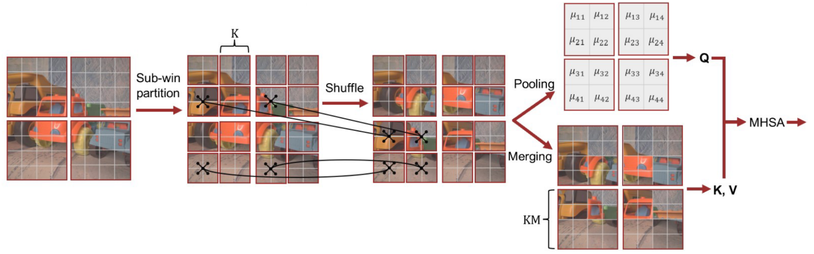
We propose Subwindow Shuffle Self-Attention (SWS-SA), a novel attention mechanism specifically designed for image restoration. This mechanism efficiently captures long-range dependencies through subwindow-based spatial shuffling. Leveraging SWS-SA, our SWSformer (Subwindow Shuffle Transformer) achieves competitive performance across a wide range of image restoration tasks.
Abstract
Transformers have demonstrated superior performance over conventional methods in various tasks due to their ability to capture long-range dependencies and adaptively generate weights. However, their computational complexity increases quadratically with the number of tokens, limiting their applicability to high-resolution image tasks. To address this problem, recent image restoration methods have attempted to mitigate this limitation by adopting mechanisms that reduce computational demands at the expense of fully capturing long-range dependencies. In contrast, the window shuffle self-attention (WS-SA) mechanism of the Shuffle Transformer reduces computational complexity without significantly limiting the ability to capture long-range dependencies. Nevertheless, WS-SA suffers from generating excessively sparse self-attention maps with a limited receptive field when applied to high-resolution images. In this work, we propose subwindow shuffle self-attention (SWS-SA), a mechanism that expands the receptive field without increasing the computational complexity of WS-SA. SWS-SA introduces a subwindow-based spatial shuffle to enhance the receptive field. Additionally, we apply average pooling to the query embeddings to further reduce computational complexity. Furthermore, we present the Subwindow Shuffle Transformer (SWSformer), which employs SWS-SA as its core component and integrates effective techniques from related works. To evaluate the performance of SWSformer, we conduct experiments on image denoising, deblurring, and deraining tasks. The experimental results demonstrate that SWSformer achieves state-of-the-art performance. Moreover, we perform comprehensive ablation studies to identify the contributions of individual components and settings to the model's overall effectiveness.
Method Overview
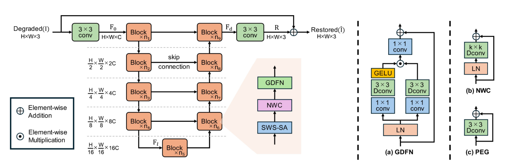
The SWSformer block consists of Subwindow Shuffle Self-Attention (SWS-SA), the Neighbor Window Connection (NWC) module (Huang et al. 2021), and the Gated-Dconv Feed-Forward Network (GDFN) (Zamir et al. 2022). We incorporate the Position Encoding Generator (PEG) (Chu et al. 2023) to enhance positional representation within SWS-SA. LN and Dconv denote Layer Normalization and Depthwise convolution, respectively.
Denoising Results
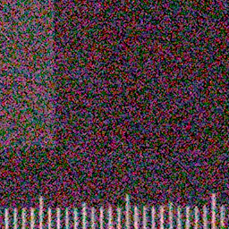
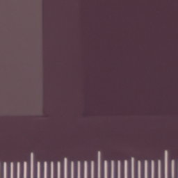
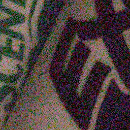
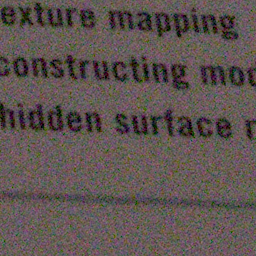
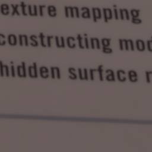
Deblurring Results
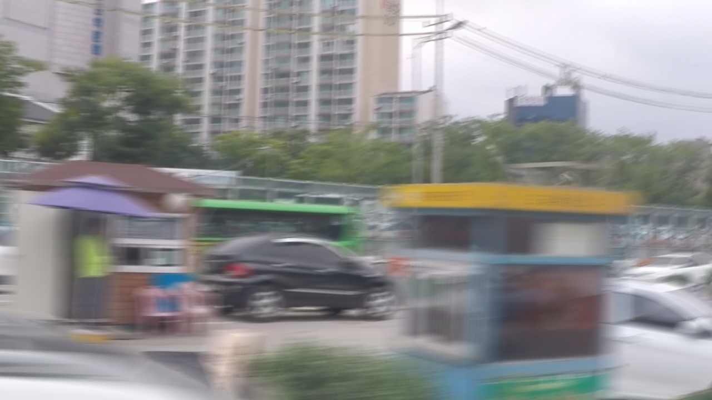
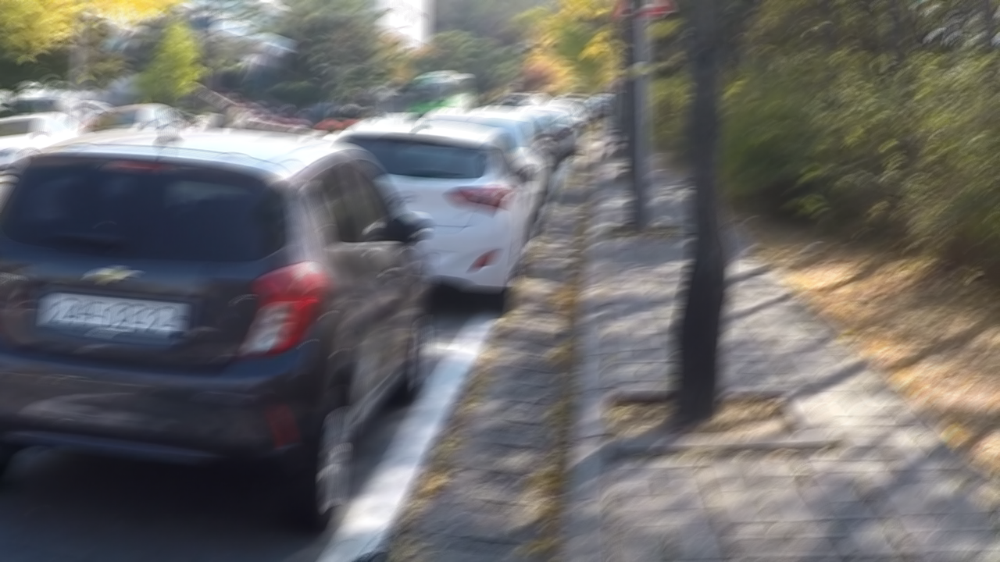
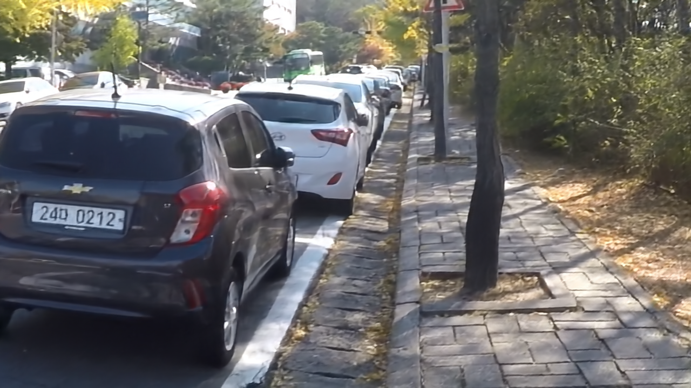
Deraining Results

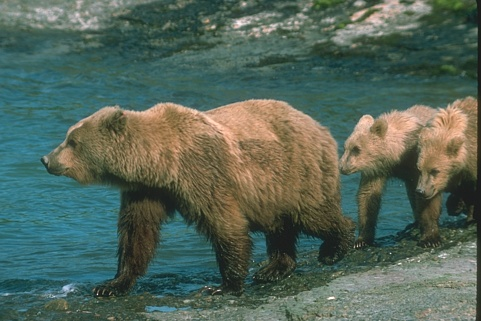
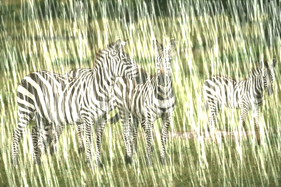
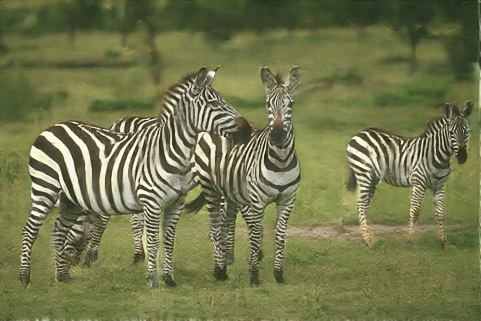
Desnowing Results
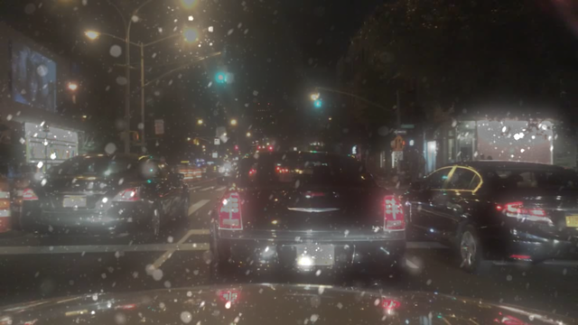
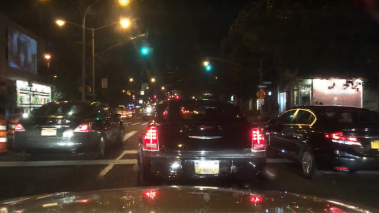
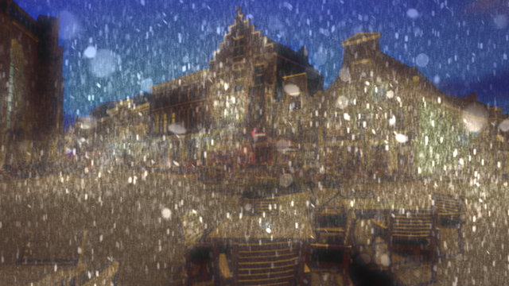
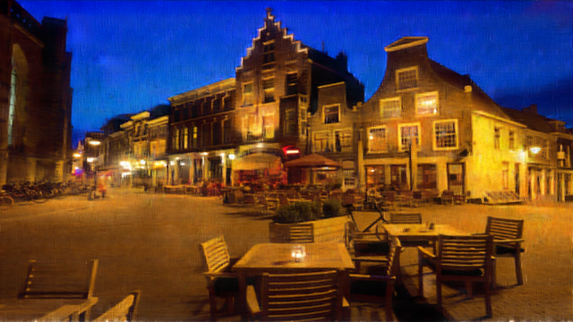
BibTeX
@article{okitsu2025swsformer,
title={SWSformer: Subwindow Shuffle Transformer for Image Restoration},
author={Nagayuki Okitsu and Masato Shirai},
journal={IEEE Access},
volume={13},
pages={178876-178892},
year={2025},
doi={10.1109/ACCESS.2025.3621348}
}